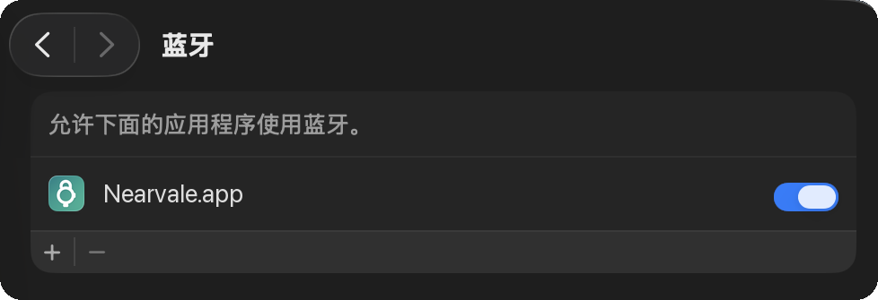
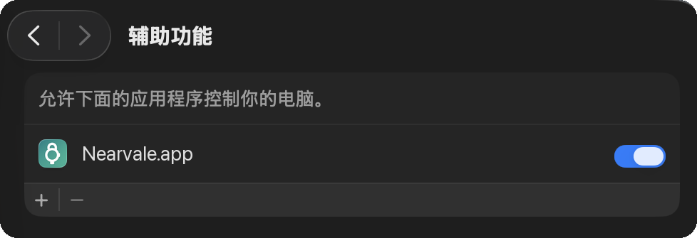
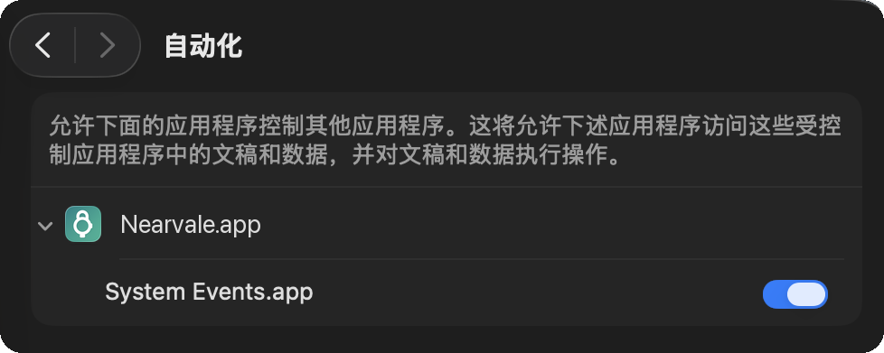
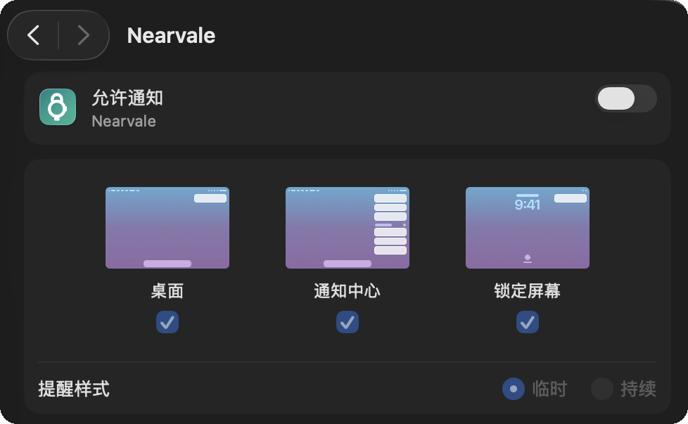

Nearvale 帮助手册
Nearvale 是 macOS 菜单栏应用：戴着 Apple Watch 走开，Mac 自动锁屏；回到工位，自动点亮屏幕。解锁由系统自带的「使用 Apple Watch 解锁」完成。
1. 第一次使用
- 打开应用，菜单栏出现图标，跟随引导走完。
- 按引导第一步的权限清单授权：蓝牙必需；默认锁屏方式还需要辅助功能和自动化（不想授权可一键改用「锁定屏幕（系统接口，免授权）」）；通知可选。每一项怎么开见「2. 权限设置」。
- 在「设置 → 设备」里选择并绑定你的 Apple Watch。未绑定手表时自动锁定不会生效，菜单栏会提示。
- 在「系统设置 → 触控 ID 与密码」里开启「使用 Apple Watch 解锁」，否则回来后只会亮屏，仍需手动输入密码。
- （推荐）「设置 → 距离 → 距离校准向导」：保持日常坐姿 10 秒，生成适合你环境的阈值。
2. 权限设置
Nearvale 用到的系统权限都能在「设置 → 权限」里看到：每一项写明用途和当前状态，点右侧按钮即可——还没问过的会直接弹出系统授权框，拒绝过的会打开系统设置对应页面。必需权限缺失时，菜单栏面板会出现「去授权」。
| 权限 | 什么时候需要 | 系统设置里的位置 |
|---|---|---|
| 蓝牙 | 必需 | 隐私与安全性 → 蓝牙 |
| 辅助功能 | 锁定方式为「⌃⌘Q」（默认），或使用托管密码时 | 隐私与安全性 → 辅助功能 |
| 自动化（System Events） | 同上，与辅助功能缺一不可 | 隐私与安全性 → 自动化 → Nearvale |
| 通知 | 可选：锁定、权限缺失、试用到期时提醒 | 通知 → Nearvale |
| 定位服务 | 可选：显示 Wi-Fi 名称、按位置信任场所 | 隐私与安全性 → 定位服务 |
| 登录项 | 可选：开启「开机启动」时 | 通用 → 登录项与扩展（macOS 14 为「登录项」） |
不想授权辅助功能和自动化：在「设置 → 通用 → 锁定方式」改用「锁定屏幕（系统接口，免授权）」或「仅关闭显示器」，这两项就不再需要（使用托管密码时除外）。引导第一步也有一键切换。
蓝牙
第一次打开 Nearvale 时系统会询问，选「允许」即可。点过「不允许」的话：系统设置 → 隐私与安全性 → 蓝牙，打开 Nearvale 的开关。

辅助功能
系统设置 → 隐私与安全性 → 辅助功能，打开 Nearvale 的开关（系统会要求输入登录密码或用触控 ID 确认）。在「设置 → 权限」里点按钮时，Nearvale 会先把自己加进这个列表，你只需打开开关；列表里没有它时，点下方「+」，在「应用程序」里选择 Nearvale。

自动化（System Events）
⌃⌘Q 锁屏是让系统自带的 System Events 发出快捷键，所以还要允许 Nearvale 控制它。第一次锁屏、或在「设置 → 权限」点「允许…」时，系统会询问是否允许 Nearvale 控制 System Events，选「允许」。点过「不允许」的话：系统设置 → 隐私与安全性 → 自动化，展开 Nearvale，打开 System Events。这个列表不能手动添加应用，里面没有 Nearvale 时，回到「设置 → 权限」点「允许…」让系统重新询问。

通知
系统设置 → 通知 → Nearvale，打开「允许通知」。不授权也能自动锁屏，只是锁定和权限缺失时不会提醒你。

使用 Apple Watch 解锁
这是 macOS 自带的功能，不是 Nearvale 的权限，但回来后自动解锁全靠它：系统设置 → 触控 ID 与密码（没有触控 ID 的 Mac 上叫「登录密码」），打开 Apple Watch 旁的开关。找不到这一项时，确认手表和 Mac 登录同一个 Apple 账户并开启了双重认证、Mac 的 Wi-Fi 与蓝牙都打开、手表设置了密码。
不同 macOS 版本的差异
Nearvale 支持 macOS 14 及以上。这几代都是新版「系统设置」，「隐私与安全性」下各项的位置相同，差别只有：
- 登录项：macOS 14 在「通用 → 登录项」，macOS 15 起改名为「通用 → 登录项与扩展」。
- 上面的截图来自 macOS 26，圆角和透明效果与 macOS 14 / 15 略有不同，开关的位置一样。
- macOS 15 起，被系统拦下的应用不能再用右键「打开」放行，要到「系统设置 → 隐私与安全性」底部点「仍要打开」。
开关打开了还是不生效？
- 在系统设置的列表里选中 Nearvale，点下方「−」移除，再回到「设置 → 权限」点按钮重新添加。
- 替换或重新安装应用后，系统可能把它当成新应用，需要重新授权。
- 公司统一管理的 Mac 可能锁定了这些开关，需要联系管理员。
- 「设置 → 诊断」的日志会写明每次没有锁定的原因，例如缺少哪项权限。
3. 菜单栏
| 图标状态 | 含义 |
|---|---|
| 在身边 | 手表信号强，保持解锁 |
| 已离开 | 手表离开并持续设定秒数，已（或即将）锁屏 |
| 搜索中 | 正在寻找手表信号 |
| 已暂停 | 你临时暂停了监控 |
| 已关闭 | 监控已关闭 |
面板里可以：立即锁定、临时暂停、查看实测信号值、所处的信号区间（在身边 / 过渡区 / 已离开）与阈值，以及点「刚才这次是误锁？」反馈误锁。
4. 设置
- 通用：自动锁定总开关、锁定方式、界面语言（跟随系统 / 简体中文 / English，重启 Nearvale 后生效；系统语言不是简中或英文时默认显示英文）、菜单栏文字、通知、立即锁定前确认、开机启动。
- 设备：绑定 / 解除绑定手表；可选最多 3 台「辅助设备」（iPhone、AirPods 等）：手表只是偶尔收不到信号、而你选的设备还在附近时，先不锁屏。辅助设备只会推迟由「信号丢失」引起的锁定（最多 2 分钟），不会让 Mac 自己锁屏，手表信号明确很弱时也不会被它推翻；iPhone 息屏后可能不再广播，效果取决于设备状态。
- 手表的蓝牙地址会不定期更换：旧地址消失、同名的新地址持续出现约 6 秒后，应用会自动续接绑定并通知你。若你选择了「托管密码自动输入（高风险）」解锁策略，则不会自动续接，而是通知你手动重新绑定（防止同名设备接管绑定）。
- 忘戴手表的那天：自动锁定的信号源连续约 3 分钟没有信号时，菜单栏会提示「自动锁定暂不生效」，并可点「改用 …」让所选的辅助设备（如 iPhone）暂时代替手表判断是否离开；最长 24 小时，随时可点「恢复手表」。注意：手机放在桌上、人走开时不会锁屏。
- 距离：「在身边」「已离开」阈值、离开后等待、信号丢失超时（阈值带上能看到当前信号落在哪里），以及距离校准向导与距离模型。页面里的「估算距离」只是粗略参考（室内误差可达数倍），锁屏只看信号强度与阈值。绑定时的自动校准发现手表信号太弱、不足以可靠区分「在身边」与「已离开」时，会提示你，不会写入参数。
- 例外：两个可选项（默认都关闭）和信任场所。
- 会议 / 演示暂缓锁定：有应用阻止显示器睡眠时先不锁，结束后补锁，设有最长暂缓上限。
- 手动解锁后重新锁定：用密码解锁但手表仍在远处时，键鼠空闲一段时间后再锁一次。
- 信任场所：把当前网络保存为「信任场所」（家、办公室），连接到它时自动暂停自动锁定，离开后恢复；菜单栏会显示提示条，点「恢复」可在本次停留里恢复锁定。网络场所靠网关识别，不需要任何授权；也可以授权定位服务后「将当前位置设为信任场所」（半径 100 / 200 / 500 米），同一个地点换了网络（如手机热点）也生效，网络与位置任一命中即算在场所内。人不在现场、或定位偏了，可以点「在地图上选择…」：在弹出的地图上点选圆心，圆圈会随半径变化，已保存的位置以灰圈显示，也可以直接输入「纬度, 经度」；打开地图期间，底图会向 Apple 地图请求图块（所选位置只保存在本机）。Mac 的定位精度有限，定位不准或没有结果时不会按位置判断；位置只在本机比对，不上传。网络指纹可被同一网络里的设备伪造、位置也可能有误差，所以这是方便功能，不是安全防线。
- 权限：各项系统权限的用途、当前状态和授权入口，见「2. 权限设置」。
- 诊断：误锁统计与自动调参（按触发原因区分：信号太弱导致的误锁调阈值，广播中断导致的误锁调「信号丢失」超时；长期没有误锁时会向你校准过的值缓慢收回）、锁定记录（每次实际锁定的时间 · 原因 · 信号，保存在本机，可导出 CSV）、诊断日志。
- 授权（仅发售版本出现）：14 天免费试用，功能完整，不用绑卡；之后可选年度订阅或终身买断，两者功能相同，都能同时在 3 台 Mac 上使用。到期前 3 天和 1 天、以及到期时会有系统通知（到期通知不受通知开关影响，因为那时自动锁定已经停止）。试用结束后自动锁定、手动锁定、设置等一律停用，只留购买与输入密钥的入口。
- 激活后这一页会显示方案：「终身许可证」或「年度订阅生效中」。订阅用户有「管理订阅…」按钮，打开 Dodo Payments 客户门户，输入购买邮箱后用邮件里的链接登录，即可查看续费日期、取消订阅或更换付款方式。
- 从订阅改为买断：买断后展开「更换密钥」，粘贴新密钥并激活，旧密钥在这台 Mac 上的激活会自动停用。订阅不会因此自动取消，记得去客户门户取消。
- 找不到密钥：点输入框下方的「找不到密钥？」打开客户门户，所有购买过的密钥都在里面。
- 换电脑前先点「停用这台 Mac」释放激活名额。自行构建的版本默认不启用授权，没有这一页。
- 关于：版本、重新运行引导、检查更新、打开本手册。
5. 常见问题
手表就在旁边，为什么还是锁屏了？
先看菜单栏的实测信号值。手表贴近时约 -42 dBm，默认「已离开」阈值 -70 dBm 通常够用。仍误锁就跑一次距离校准向导，或在菜单栏标记误锁让应用自动放宽（锁定记录里能看到每次是「信号太弱」还是「信号丢失」触发的）。
走开了但没锁屏？
依次检查：已绑定手表；蓝牙已授权；锁定方式为「⌃⌘Q」时辅助功能和自动化都已授权（缺失时菜单栏会出现「去授权」，也会有通知）；没有开启「会议 / 演示暂缓锁定」且恰有应用在阻止显示器睡眠；监控未被暂停。「设置 → 诊断」的日志会写明每次没有锁定的原因。
回来后只亮屏、不自动解锁？
自动解锁由 macOS 完成，不是本应用。请确认「系统设置 → 触控 ID 与密码」里已开启「使用 Apple Watch 解锁」，手表已解锁并戴在手腕上；找不到这个开关见「2. 权限设置」。
升级后又要重新授权？
替换 App 后系统可能把它当成新应用，要求重新授予蓝牙、辅助功能等权限：打开「设置 → 权限」逐项处理。开关看着是开的却仍提示未允许时，先在系统设置里把 Nearvale 移除再重新添加。
试用结束后会怎样？（仅发售版本）
自动锁定会停止，现在离开 Mac 不会再被锁屏——应用会明确告诉你这一点并发一条系统通知。你的设置和锁定记录都保留，订阅或买断并输入密钥后立即恢复。激活后每隔 7 天会联网校验一次；断网不要紧，30 天内照常工作，只有服务端明确答复密钥无效才会停用。
订阅到期或续费失败会怎样？（仅发售版本）
服务端答复许可证失效后（订阅已取消到期、续费扣款没成功、或已退款），自动锁定会停止，应用会发一条系统通知，授权页显示「订阅已结束」或「许可证已失效」。在客户门户补缴成功后，应用约每 6 小时复查一次，会自动恢复，不必重新输入密钥；急的话点「已补缴，重新校验」。也可以改为买断，输入新密钥。取消订阅本身不会立刻停用：已付费的这一年内照常使用。
会联网吗？
默认不联网。网络请求只有三种情况：①你点击「关于 → 检查更新」时，向 GitHub 发送一次查询最新版本号的请求，不带任何本机信息，不自动下载或安装；②你打开「例外 → 在地图上选择…」的地图弹窗期间，地图底图会向 Apple 地图请求当前画面的图块，所选位置不上传，关闭弹窗后不再请求；③仅限启用授权的发售版本：试用期间完全不联网；只有你输入密钥激活、激活后每隔 7 天校验一次（许可证被答复失效期间约每 6 小时复查一次，以便续费后自动恢复）、以及你点「停用」时，才会向 Dodo Payments 发送许可证密钥与一个随机设备标签（不含主机名）。校验时断网不会让你被锁在外面，有 30 天离线宽限。
6. 更新
在「设置 → 关于」点「检查更新」。有新版本时会出现「前往下载」，在 GitHub Releases 页面下载 DMG，拖入「应用程序」覆盖即可。也可以随时在 nearvale.app 下载最新版本。
7. 反馈问题
发邮件到 support@nearvale.app，或在 GitHub Issues 提交，并附上「设置 → 诊断」里导出的日志（日志已脱敏）。许可证与退款问题请用邮件，不要把许可证密钥贴到公开的 Issues 里。